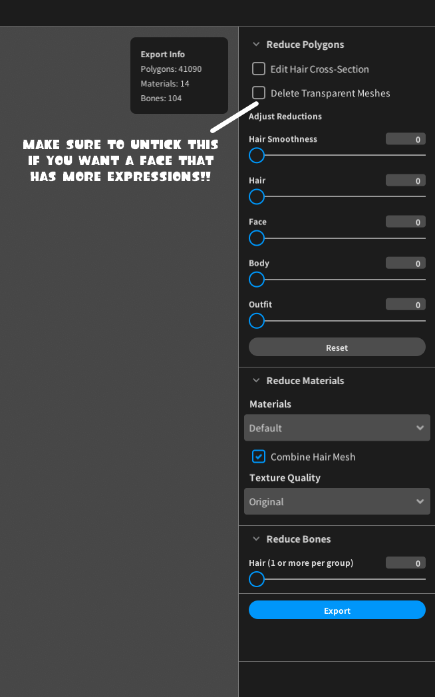
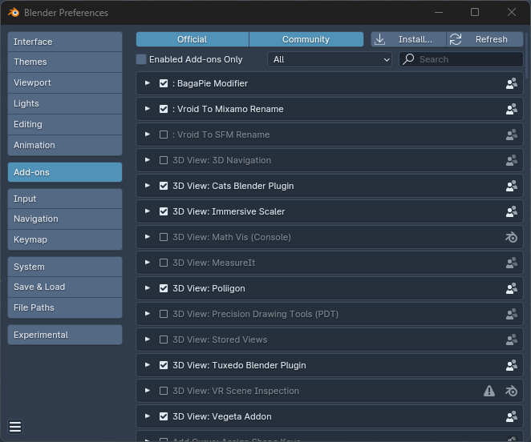
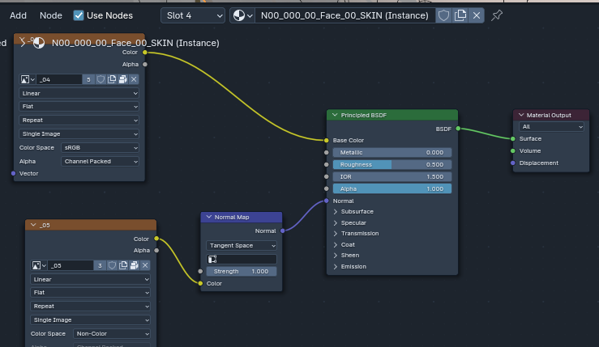

CappyAdams
uploaded on 06/04/2024
VRoid 2 Blender Tutorial
I assume you wish to start rigging VRoid models for animations, renders, etc. Well, you'll learn how to do so here!
--------------
WARNING!:
This tutorial has been only confirmed to work with VRM0.0 and I have no idea if this works with VRM1.0... You can always try this rigging method with VRM1.0 but it might not work.
--------------
IMPORTANT!:
This tutorial requires Blender quite a bit of Blender knowledge. I'll try to explain some things but it would be better and easier if you already know atleast SOME bits of Blender.
--------------
SECTIONS:
--------------
YOU'LL NEED:
-VRoid Studio (Duh!)
-A computer that meets Blender's requirements
-Blender 4.1 or above
-Unity (OPTIONAL BUT RECOMMENDED)
-UniVRM (OPTIONAL BUT RECOMMENDED)
-NEB (OPTIONAL BUT RECOMMENDED)
-Rigify (Addon built inside Blender)
-ARKit VRoid Models (OPTIONAL BUT RECOMMENDED)
--------------
The Beginning: VRoid Stuff
Alrighty! Let's get started!
First of all, We need to make our model. I won't be covering everything about VRoid in this tutorial.. If you don't know how to use VRoid yet, You can go to youtube and look for tutorials.
For this tutorial I'll be using this my model of a character who I call Alex

Now we have to take a look at the export settings. If you plan on copying blendshapes/shapekeys, You HAVE to untick the "Delete Transparent Meshes" box. If you don't plan on adding ARkit blendshapes, you can keep the box ticked.
Unity Editing (OPTIONAL BUT RECOMMENDED!!)
Note:
This section is completely optional. however, If you wish to have more blendshapes/shapekeys that will allow you to make more facial expressions then you need to do this part.
Alright so, now that you've exported your model, open Unity and make a new 3D project. Once the project has been created, The Unity project should open automaticlly. Now import UniVRM into your project by dragging the unity package into the program. then make a new folder by right clicking in the assets box. Enter the folder and drag your VRM file into the folder. after the model is imported, drag the prefab into the hierarchy.
After that, drag the NEB unity package into the assets and import the package into your project. Now go to the NEB folder and drag the NEB prefab into your hierarchy. Now what you want to do is go back to assets and import the ARKit VRoid model (I recommend using the female version). after that, drag the ARKit model into the hierarchy and click on the NEB prefab in the hierarchy (for me it's called "_NEBLite". If you're using NEBPro, it might have a different namme). Drag the ARKit model into the "Source Model" and your custom model in the "Target Model" and then click "Copy Blendshapes"
If you find this part difficult to understand, You can watch this video made by the creator of NEB
Now, once you're done with editing your model in Unity, you can export the model by going to the "VRM0" button on the top and clicking the export button.
The Blender Beginning
It's finally time to convert the model to Blender! but before we do anything, We gotta install our addons (All listed in the "You'll need" section). To install the addons, go to edit, preferences, Add-ons and then install the addons.
DO NOT UNZIP YOUR ADDONS!
Don't forget to delete the default cube!... unless you want it there.
After you've installed all the addons, go to File, Import, VRM and find your VRM file.
Now! Let's go edit the materials!
Material Editing
IMPORTANT!
before I made this guide, I made some shaders for VRoid Blender models. so if you want a nicer look to your models, You can download the shaders here
Go to the shading tab and select one of the meshes of your model. click on the red "Material Properties" button and untick "Enable VRM MToon Material" and add your textures. Materials with normal maps should look like this
Rigging
This part should be pretty simple since I won't be covering the super advanced. so let's just get into this.
so, before you do anything, go to the CATs addon, Optimization, Bones, Delete: Zero Weight Bones.
Now press the F3 key in Blender while hovering over the 3D viewport. search for "VRM Rigify" and click the "Generate Humanized VRM Rig"

After the rig has been generated, Do what I do in this video
I'm putting this part in a video format because it's a little too hard for me to explain.
You did it!
You made a simple enough VRoid2Blender rig! Now, It's not exactly the same as most of my rigs as my rigs are alot more complex. I might do a part 2 of this tutorial, where I'll include parts where I do add drivers to shapekeys and some other stuff. so yeah!
Anyways, Happy Blending everyone! I hope the tutorial was useful :3